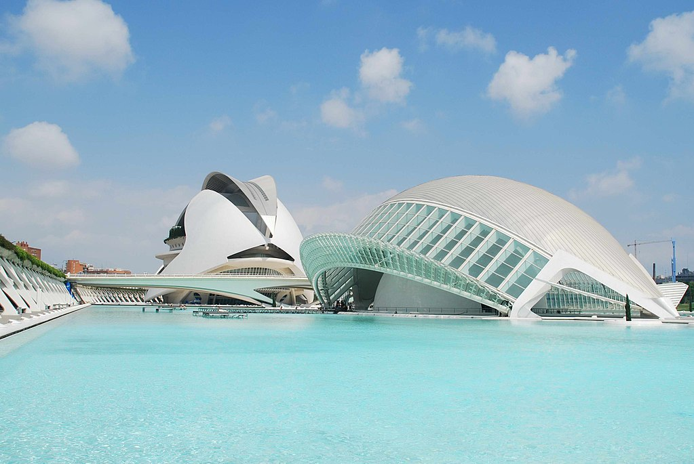
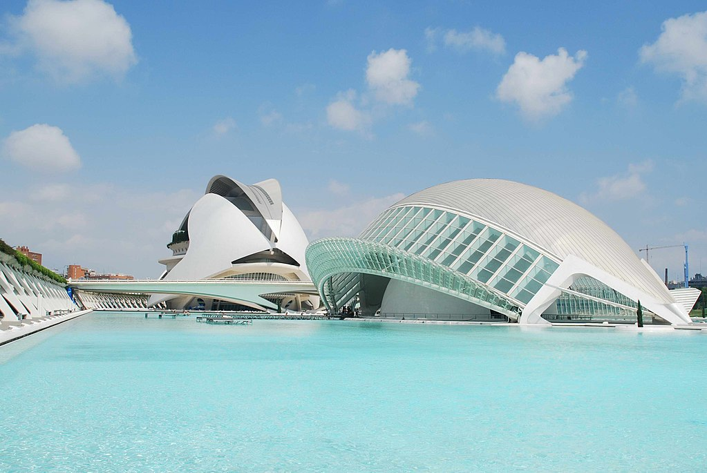

Bienvenidos a España desde Casa
Descubre la magia de un país lleno de historia, cultura y tradiciones
que te sorprenderán a cada paso. Este portal es tu guía para explorar
las ciudades más emblemáticas de España, desde la vibrante energía de
Madrid y la modernidad de Barcelona, hasta el encanto mediterráneo de
Valencia y la belleza costera de Palma.
Aquí encontrarás los puntos de interés y las curiosidades más
importantes que te harán enamorar de la riqueza cultural y la diversidad
que ofrece cada rincón de este país. Sea que planees una escapada de fin
de semana o una aventura más larga, estás a punto de empezar un viaje
inolvidable.

 
